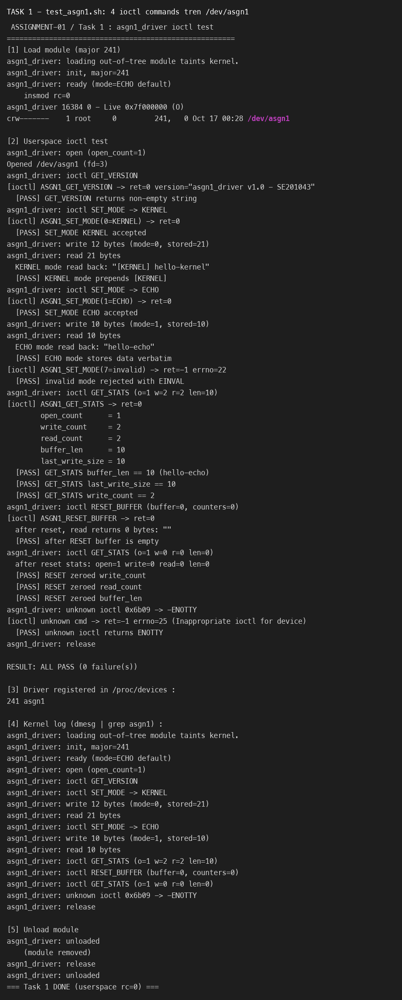
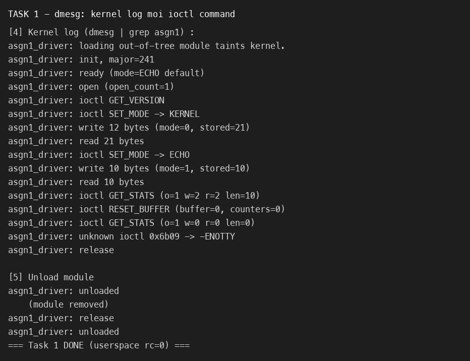
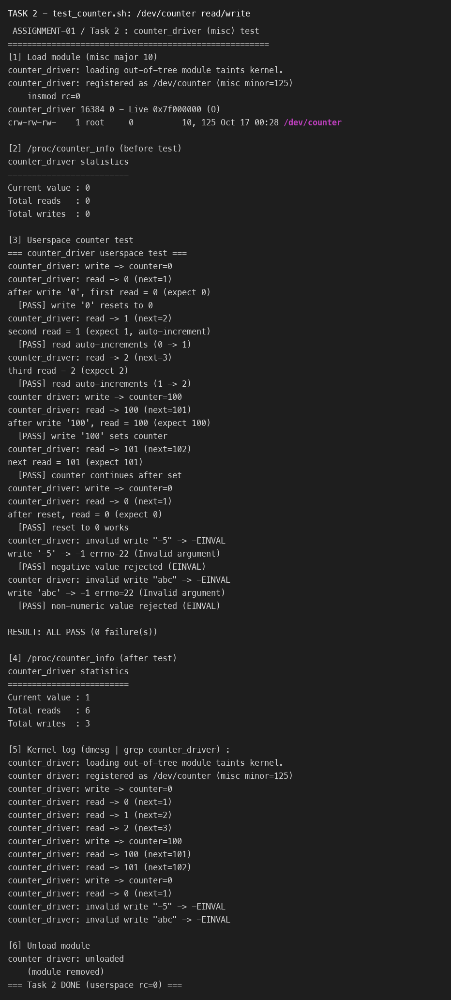
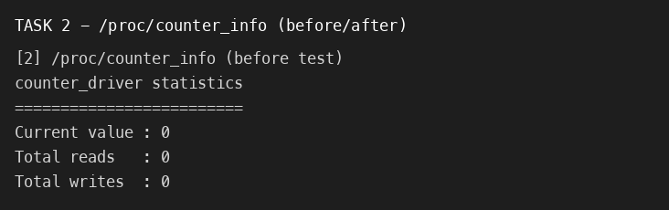

| Họ và tên / MSSV | Vũ Tùng Minh – SE201043 |
| Lớp | AS2105 – LOS201 Embedded Linux Systems |
| Ngày thực hiện | 17/10/2026 |
| Kiến trúc / target | ARMv7-A Cortex-A9 – QEMU vexpress-a9, Linux 5.15.0 |
| Toolchain | arm-linux-gnueabihf-gcc 11.4.0 (hard-float), Kbuild từ kernel LAB-01 |
| Môi trường host | CachyOS x86_64 + container Ubuntu 22.04 (Podman), QEMU 6.2.0 |
| Tiêu chí | Character Device | Block Device | Network Device |
|---|---|---|---|
| Ngõ vào VFS | file_operations (read/write/ioctl/mmap…) | block_device_operations + gendisk/request queue | net_device_ops (không có file trong /dev) |
| Đơn vị truyền | Byte stream (không định hình kích thước) | Block / sector (512B–4KB), truy cập địa chỉ được | Packet / frame (mỗi packet rời rạc) |
| Buffering | Không có buffer tầng VFS; driver tự quyết định. Có thể dùng DMA, FIFO. | Page cache + request queue, I/O scheduler gộp/sắp xếp request. | Đệm trong sk_buff + queue; có NAPI/NAPI poll. |
| Ví dụ nhúng | UART/console, GPIO, ADC, /dev/asgn1, /dev/counter, rtc, input | eMMC/SD card, NAND qua FTL, USB mass storage, MTD block | Ethernet MAC, Wi-Fi, CAN, virtual eth0/wlan0 |
| Ngữ nghĩa vị trí | Tuần tự (seek tùy ý nếu muốn) | Truy cập ngẫu nhiên theo block, mount được filesystem | Không có khái niệm offset; gửi/nhận theo giao thức |
Khi nào chọn loại nào (ví dụ thiết kế cụ thể):
/dev/sms_sensor sẽ làm trong Assignment 2).ext4/vfat xử lý.register_chrdev() còn Task 2 dùng misc_register()?register_chrdev() (Task 1) | misc_register() (Task 2) | |
|---|---|---|
| Major number | Người viết tự chọn (241) – có thể trùng, phải tự quản lý dải 240–254 | Kernel cấp MISC_MAJOR = 10; chỉ cần chọn minor (động) |
| Device node | Tự tạo class/device (hoặc mknod) | Framework tự tạo /dev/<name> khi misc_register() |
| Số minor | Một major cho nhiều minor (nếu dùng register_chrdev_region) | Một minor cho một driver nhỏ; chỉ 1 node mặc định |
| Phù hợp | Driver "lớn", có thể cần nhiều thiết bị con / nhiều minor | Driver nhỏ, đơn mục đích (GPIO, watchdog, nvram, bộ đếm) |
| Trong bài | Cần major riêng để rõ ràng, kiểm tra qua /proc/devices (241 asgn1) | Đúng "khuôn mẫu" của kernel cho bộ đếm nhỏ: misc_register() |
Nhìn chung càng hạn chế tự chọn major càng tốt để tránh xung đột; kernel dành 240–254 cho "local/experimental", vì vậy Task 1 dùng 241 là hợp lệ nhưng trong sản phẩm thật nên xin cấp major động bằng alloc_chrdev_region() hoặc dùng misc.
atomic_t thay vì int?Trên SMP (vexpress-a9 có 2 core), phép counter++ không nguyên tử: nó gồm load → add → store. Nếu Sensor Thread và một luồng khác cùng tăng, hai core có thể cùng đọc giá trị cũ và cùng ghi lại cùng kết quả ⇒ lost update. Ví dụ:
counter = 5 CPU0: read 5 CPU1: read 5 CPU0: add -> 6 CPU1: add -> 6 CPU0: store 6 CPU1: store 6 <-- đáng lẽ phải là 7
Cơ chế atomic_inc() dùng lệnh ldrex/strex (LL/SC) của ARMv7 để đảm bảo đọc–tăng–ghi là một thao tác nguyên tử, không bị xen kẽ. Trong driver, tác vụ đọc giá trị rồi mới tăng cũng cần atomic_read() + atomic_inc() để không mất mát; ngoài ra các counter thống kê (total_reads/writes) chỉ chạm trong counter_mutex nên có thể dùng int an toàn.
Mã lệnh ioctl là một số 32-bit được _IOC() đóng gói thành 4 trường: dir (2 bit, hướng dữ liệu) ở bit 30–31, size (14 bit, kích thước tham số) ở bit 16–29, type (8 bit, magic number) ở bit 8–15 và nr (8 bit, số thứ tự lệnh) ở bit 0–7. Magic number giúp phân biệt các driver khác nhau, tránh việc gửi lệnh của driver này cho driver khác và tránh trùng số lệnh.
/* trích asgn1_ioctl.h */
#define ASGN1_IOC_MAGIC 'k' /* 0x6b */
struct asgn1_stats { int open_count; ... int last_write_size; }; /* 5*int = 20B */
#define ASGN1_GET_STATS _IOR(ASGN1_IOC_MAGIC, 1, struct asgn1_stats)
Tính cụ thể: _IOC_READ = 2; sizeof(struct asgn1_stats) = 5 * 4 = 20 = 0x14.
cmd = (2 << 30) | (20 << 16) | ('k' << 8) | 1
= 0x80000000 | 0x00140000 | 0x00006b00 | 0x00000001
= 0x80146B01
_IOC_NR(0x80146B01) = cmd & 0xFF = 0x01
_IOC_SIZE(0x80146B01) = (cmd >> 16) & 0x3FFF = 20
_IOC_TYPE(0x80146B01) = (cmd >> 8) & 0xFF = 0x6B
Và lệnh không hợp lệ dùng trong test _IO('k', 9) chính là 0x00006B09 – dmesg ghi đúng unknown ioctl 0x6b09 -> -ENOTTY, chứng minh các bit được mã hóa/giải mã đúng.
test_asgn1.sh load module major 241, xác nhận node /dev/asgn1, gọi lần lượt 4 ioctl và chạy rmmod. Toàn bộ 13 kiểm tra đều PASS:

[KERNEL]; SET_MODE ECHO lưu nguyên bản; mode 7 bị từ chối EINVAL; GET_STATS trả đủ 5 trường; RESET xóa buffer và đưa counter về 0; lệnh lạ trả ENOTTY.Kernel log xác nhận mỗi ioctl command được ghi log rõ ràng, và module được gỡ sạch:

dmesg | grep asgn1 – trình tự init → ioctl → write/read → unloaded.
/proc/counter_info đọc được ở các thời điểm khác nhau (trước test, sau test) và phản ánh đúng tổng số lần đọc/ghi:

asgn1_write() khai báo char kbuf[BUFFER_SIZE] (1024 B) trên stack rồi mới ghép tiền tố. Kbuild cảnh báo the frame size of 1032 bytes is larger than 1024 bytes [-Wframe-larger-than=]. Stack kernel chỉ có 8 KB (không có guard page mở rộng), cấp phát lớn trên stack dễ tràn. Cách sửa: bỏ buffer tạm, ghi tiền tố trực tiếp vào device_buffer rồi copy_from_user(device_buffer + prefix_len, …) – vừa hết cảnh báo vừa giảm copy thừa./dev/console khi tạo initramfs: lần đầu đóng gói rootfs bằng cpio thường khiến /dev/console thành regular file, làm output của shell biến mất trên serial dù driver nạp thành công. Cách sửa: dùng fakeroot + mknod để archive chứa character device c 5 1 (bài học từ LAB-02).Mỗi module có một biến struct module::refcnt. Khi module được nạp, kernel giữ một tham chiếu tạm (module_get()) trong lúc chạy module_init(), sau khi init xong mới module_put() – nên lsmod hiển thị Used by 0 khi chưa ai dùng. Khi một process open() một char device có file_operations.owner = THIS_MODULE, hàm chrdev_open() gọi try_module_get() để tăng refcount; close() cuối cùng gọi module_put() để giảm. Như vậy refcount phản ánh số đối tượng đang "níu" module trong bộ nhớ.
Nếu gọi rmmod khi vẫn còn process open device, refcount > 0 nên kernel từ chối: rmmod: ERROR: Module is in use (errno EBUSY). Điều này rất quan trọng: nếu cưỡng ép gỡ trong khi file_operations còn được tham chiếu, kernel có thể gọi hàm đã bị giải phóng → use-after-free/oops. Để buộc gỡ, ta phải: (1) đóng/tắt process đang dùng thiết bị, (2) nếu cần, dùng rmmod -f – chỉ khả dụng khi kernel bật CONFIG_MODULE_FORCE_UNLOAD, và đây là cách nguy hiểm vì bỏ qua kiểm tra an toàn (có thể gây crash). Trong bài, sau khi asgn1_test đóng fd, rmmod asgn1_driver gỡ thành công – dmesg hiện asgn1_driver: unloaded.
memcpy() hay con trỏ trực tiếp để trả struct stats? Điều gì xảy ra ở mức MMU?Địa chỉ con trỏ do userspace truyền vào ioctl (arg) là địa chỉ ảo của tiến trình gọi, chỉ được dịch đúng khi MMU dùng bảng trang của tiến trình đó (current->mm). Kernel truy cập bộ nhớ qua ánh xạ của riêng nó; với KPTI, phần lớn không gian user không hiện diện trong bảng trang kernel. Nếu kernel memcpy() thẳng vào địa chỉ user:
NULL, vùng chỉ đọc, hoặc cố tình trỏ vào vùng kernel) → ghi đè bộ nhớ kernel hoặc rò rỉ thông tin (leo thang đặc quyền).asgn1_stats do kernel điền có layout/endianness cố định; copy_to_user() đảm bảo copy đúng sizeof(struct) và xử lý fault, còn memcpy() không kiểm tra gì.copy_to_user() gọi access_ok() để xác thực vùng địa chỉ user, rồi dùng các store đặc biệt được khoanh trong bảng exception table (__put_user); nếu page fault xảy ra, kernel bắt lỗi, trả về số byte chưa copy và driver trả -EFAULT thay vì làm sập hệ thống.
| Tiêu chí | Block subsystem | MTD subsystem |
|---|---|---|
| Mô hình thiết bị | Thiết bị giả lập ghi đè sector bất kỳ (có FTL/controller quản lý) | Flash thô: chỉ ghi 1→0, phải xóa theo eraseblock trước khi ghi |
| Đơn vị I/O | Block cố định 512B/4KB, có request queue + I/O scheduler, page cache | Truy cập byte qua /dev/mtdX + ioctl (MEMERASE, MEMWRITE, MEMGETINFO) |
| Bad block / wear | Ẩn dưới FTL/controller | Phải quản lý bad block; wear-leveling do filesystem (JFFS2/UBIFS) lo |
| Filesystem | ext4/vfat/… | JFFS2/UBIFS/YAFFS2; không dùng ext4 trực tiếp |
| Ví dụ | eMMC, SD, USB, HDD | Raw NAND/NOR/SPI-NOR trên board nhúng |
Thiết bị lưu trữ cần quản lý qua MTD khi đó là flash thô gắn trực tiếp (NAND/NOR) mà kernel/OS phải tự xử lý erase, bad block và wear – nếu đưa nó qua block layer như ext4 thì sẽ ghi đè sai và nhanh hỏng. Ví dụ cụ thể: chip NAND 128 MiB hàn trên board (như mô phỏng nandsim ở LAB-02) – phải dùng MTD + JFFS2/UBIFS. Ngược lại thẻ microSD hay eMMC có bộ điều khiển FTL bên trong thì dùng block layer bình thường.
read() của counter_driver phải xử lý *ppos?Khi userspace gọi cat /dev/counter, thư viện C lặp: while ((n = read(fd, buf, N)) > 0) write(1, buf, n); – tức là gọi read() nhiều lần liên tiếp cho đến khi nhận 0 byte. VFS không tự dịch con trỏ vị trí cho driver; nó truyền &file->f_pos qua tham số loff_t *ppos và trông cậy driver cập nhật giá trị đó.
Nếu driver không kiểm tra/không cập nhật *ppos: lần gọi đầu trả về "0\n" (2 byte) nhưng *ppos vẫn bằng 0. Lần gọi kế tiếp VFS lại gọi driver với *ppos = 0, driver lại trả về giá trị hiện tại (đã tăng thành 1) và lại không tiến offset… cat không bao giờ thấy EOF nên lặp vô tận, in ra một dòng số mỗi vòng (hoặc treo terminal, đầy log). Vì vậy driver phải: (1) trả 0 khi *ppos != 0 (đã đọc hết), và (2) *ppos += n sau khi copy dữ liệu. Trong counter_driver.c, hai dòng này chính là điều kiện dừng cho cat:
if (*ppos != 0)
return 0; /* EOF -> cat dung */
...
*ppos += n; /* bao cho VFS biet da doc xong */